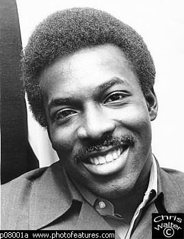
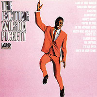
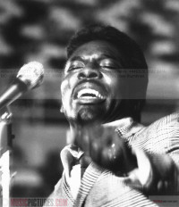
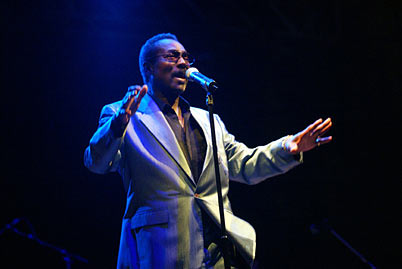

|
 Wilson PICKETTИз соула ушла душа В возрасте 64 лет в США скончался классик музыки соул певец Уилсон Пиккетт. Причиной смерти стал сердечный приступ, случившийся с ним 19 января в больнице города Рестона, Вирджиния. Уилсон Пиккетт родился в Алабаме, в детстве пел в церковном хоре, а первых серьезных успехов на музыкальном поприще добился в Детройте в составе группы The Falcons. Первым ее шлягером с лидирующим вокалом Пиккетта стала песня "I Found A Love" (1962). Вскоре певец стал выступать самостоятельно. Взлет популярности Уилсона Пиккетта совпал с исчезновением расовых границ в популярной музыке США. Стили, которые в 50-е годы жили лишь в культурных гетто, обслуживающих исключительно "цветную" аудиторию, окончательно стали частью жизни белых американцев. Лучшие номера Уилсона Пиккетта были созданы им в сотрудничестве с легендарным Джерри Векслером, продюсером, открывшим миру пионера соула Рэя Чарльза и впервые зафиксировавшим на звуковом носителе соул в его классической формуле -- вокальная манера, тяготеющая к негритянским церковным песнопениям (госпелз), плюс ритмика светских, танцевальных стилей, в первую очередь ритм-энд-блюза. Записи Уилсона Пиккетта стала выпускать та же компания, которая ранее издавала песни Рэя Чарльза,-- Atlantic Records. В 1965 году Уилсон Пиккетт выпустил свой первый суперхит "In The Midnight Hour". Успех песни был обусловлен необычным скрипучим тембром его голоса, страстной подачей и тем, что записывали ее не в Нью-Йорке, где студийные музыканты привыкли работать строго по нотам и по часам, а в мемфисской студии Stax Records, известной своим особым "южным" саундом и склонностью музыкантов к импровизации. Согласно легенде, Джерри Векслер не стал ничего объяснять музыкантам про будущий хит своего нового подопечного, а просто станцевал его. С удовольствием подхватив ритм, музыканты в ходе записи впервые применили ставший впоследствии очень характерным для соула прием: бас-гитара играла динамично, упруго и по тем временам небывало независимо от ударных.  Рожденный на Stax Records питающийся энергией своих африканских корней соул составил серьезную конкуренцию в большей степени ориентированной на белую аудиторию разновидности соула, которую продвигала детройтская компания Motown. Сам Уилсон Пиккетт на равных тягался в чартах с крестным отцом современной черной музыки Джеймсом Брауном. За "In The Midnight Hour" последовали шлягеры "634-5789", "Funky Broadway" и главный хит Уилсона Пиккетта песня "Mustang Sally", написанная его коллегой по The Falcons Мэком Райсом. В течение 40 лет выпуска автомобиля Ford Mustang песня была своеобразным гимном этой модели - "Mustang Sally" входит в число наиболее часто перепеваемых мировых шлягеров, а российской аудитории она лучше всего известна по знаменитому фильму "Группа" (The Commitments). В 70-е годы в Америке звезды соула были отодвинуты в сторону мощной волной диско, но Уилсон Пиккетт не только продолжал записывать музыку, но и регулярно гастролировал, правда, все больше в Европе, где ему оказывали неизменно теплый прием. Кроме того, певец совершил вместе с Тиной Тернер и еще целым рядом черных музыкантов турне по Западной Африке. В ходе гастролей был снят фильм "Soul To Soul", зафиксировавший столкновение музыки современных афроамериканцев с сегодняшней культурой областей, из которых Америка когда-то вывозила рабов и их напевы, к которым генеалогически восходит блюз.В последние два десятилетия Уилсон Пиккетт вел жизнь, типичную для многих отставных суперзвезд. Авторские отчисления регулярно пополняли его банковский счет, он жил в свое удовольствие, и тормоза нередко отказывали. В полицейских протоколах рядом с его именем значились такие инциденты, как вождение автомобиля в нетрезвом виде, незаконное владение оружием, хулиганство, избиение любовницы и, наконец, ДТП, в котором пострадала 86-летняя старушка. Наказания колебались в диапазоне от штрафа в $1 тыс. до пяти лет исправительных работ и года тюремного заключения. Тем не менее для музыкальной общественности Уилсон Пиккетт оставался непререкаемым авторитетом до самых последних дней. В 1991 году его имя было увековечено в Зале славы рок-н-ролла, а два года спустя Фонд ритм-энд-блюза удостоил его звания пионера ритм-энд-блюза. В 2000 году Уилсон Пиккетт сыграл в фильме "Братья Блюз 2000" -- продолжении хрестоматийной ленты Джона Лэндиса "Братья Блюз". Режиссер Роджер Фридман, четыре года назад снявший Уилсона Пиккетта в своем фильме о соул-музыке "Выживает сильнейший", сообщил прессе, что виделся с певцом на прошлой неделе, тот был полон желания поскорее справиться с болезнью, с которой боролся весь прошлый год, чтобы вернуться в шоу-бизнес. Некролог напечатан газетой "Коммерсантъ" 21.01.2006  |